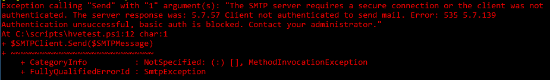
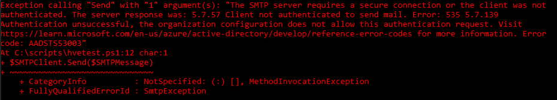
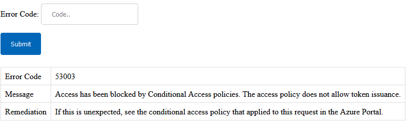

Graph and PowerShell Blog
Graph and PowerShell BlogMicrosoft has documentation for removing the last Exchange server in a Hybrid setup but until now never really addressed how mail relay for applications would be replaced. Some admins have installed a Linux mail server on-prem with a routing group connector to O365, but that still leaves you with at least one on-prem server.
Finally, we have a solution, High Volume Email (HVE) which allows for 20 accounts that can relay email using basic authentication. SMTP basic authentication will be turned off for regular accounts in 2025, but these HVE accounts will be allowed to use basic auth after this by relaying to a different address: smtp-hve.office365.com.
Currently, this is in general preview, so we won't know the final details until September 2024. Microsoft has not said if there will be a cost for this service, but if I had to guess I would say it would remain free with 20 accounts. There is also a limit on how many external mails can be sent, which could be a problem with scanned documents sent via mail.
With all this in mind, I decided to take an inventory of existing applications relaying mail. First I found we had over 40 apps relaying, so with only 20 addresses to choose from this means some apps will need to share.
Second I checked what apps would support client submissions for relay, nearly all of them did just a couple of legacy apps would only support simple SMTP relay
Finally, I checked what apps could use OAuth or Graph, again this was a small number, one app supported Graph, and two apps supported Client Submission with OAuth.
After taking the inventory it was time to setup an account and create a firewall rule for access, both for the LAN and the New World Landing Zone in Azure. The firewall rules were quite straightforward, port 587 allowed out to smtp-hve.office365.com.
With this setup it was time to test with a PowerShell script, but an error came back:

↑ Authentication error - Error: 535 5.7.139
This is because basic authentication is turned off for all accounts by default. The solution was to apply a policy that allows for Basic Authentication with ExchangeOnline PowerShell:
set-user hve@domain.com -AuthenticationPolicy "Allow SMTP Basic Auth"
Trying the script again, we seem to get the same error:

↑ Another authentication error.
Slight difference in the error message, and if you look up the error code it gives a hint as to where the problem lies:

↑ Error Code 53003 points to Conditional Access.
It's best to check the account activity in Azure to find what Conditional Access rules were blocking this. In our case, two rules blocked the access, MFA and Block Basic Auth.
After allowing an exception the mail was sent via HVE.